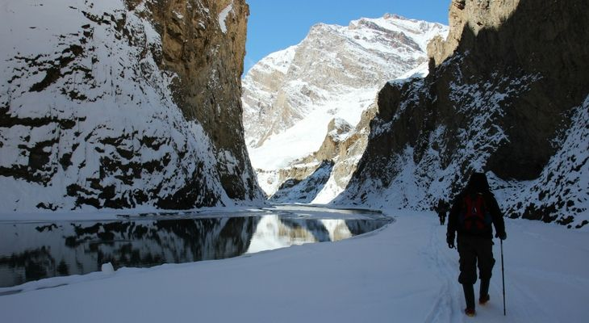
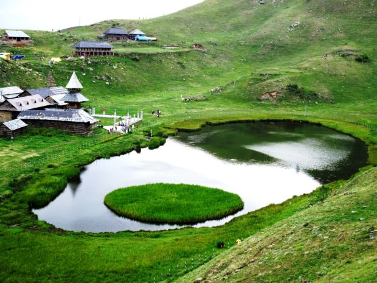

Major Attractions

Laddakh:Love of Treekers
Known as the paradise for trekkers, Ladakh is a place for people with infinite love for trekking and travellers with quest for peace. Offering a unique landscape and exquisite culture, Ladakh gives you a glimpse of its other side of beauty like ancient monasteries, being a ground for pilgrimage journeys. Trekking in Ladakh can be strenuous and requires you to be physically fit before you begin to experience its true beauty. Trekking in Ladakh is limitless; here are a few not-to-be-missed treks in Ladakh that won’t disappoint you. Ladakh, Zanskar offers action-packed sights and enchanting beauty of its landscape giving you a feeling that you are now a pro traveller. To enjoy the panoramic view of the beautiful peak and glorifying land of the Himalayan region, you to know that this trek will test your fitness and endurance level. With numerous mountains, valleys and forests, covering Zanskar require one to three weeks. Attractions: Zanskar Valley, Pensi La Pass, Padum, Zanskar River, Rangdum, Phuktal Monastery, etc. Difficulty Level: Moderate to Challenging Starting Point: Padum (District Headquarter of Zanskar valley) Maximum Altitude: 5090 m Best season to trek: Mid-May to October 
Himachal Pradesh Ecotourism
Himachal Pradesh is one of the most popular and easily accessible Hill State of India. People from all parts of the country as well from different parts of the world visit this beautiful State to enjoy its natural beauty. The Himachal Pradesh Tourism Development Corporation has acted as a catalyst, trendsetter and a prime mover for the promotion of domestic and foreign tourism in Himachal Pradesh.<